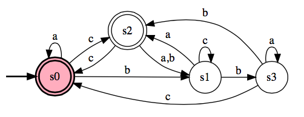
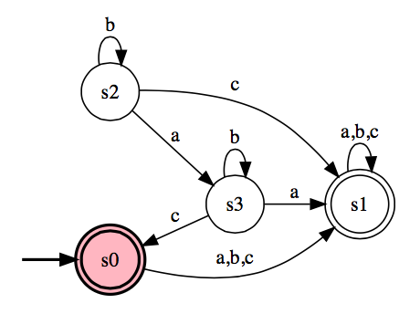
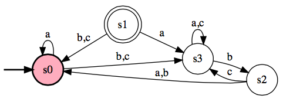

Due Dates: Oral presentations of material begin on 22 November.
Written descriptions of material presented due one week after presentation.
Topics: Decidable Languages (Chapter 4).
An integral part of this class is understanding and presenting the problems
assigned as homework. Everyone is expected to do all the problems,
but we will take turns on who presents the problem solutions to the class
(every 2-3 weeks, depending on the number of students in the class). Within
a week of presenting a problem solution to the class, you must submit a written
description of it, via the Blackboard system. The written solutions
will be posted on the Blackboard website for the class, so, they can used
by everyone to study for the exams. Since it's hard to write
down answers that are concise and are easily readable by all, if you wish
to improve a grade on any problem, you may resubmit it for grading.
Undergraduate Problems
All students enrolled should complete the following:
- Answer the following for the DFA, M. Explain your answers.

- Is <M, aacc> ∈ ADFA?
- Is <M, aac> ∈ ADFA?
- Is <M> ∈ ADFA?
- Answer the following for the DFA, M. Explain your answers.

- Is <M, acac> ∈ ADFA?
- Is <M, acac> ∈ AREX?
- Is <M,M> ∈ EQDFA?
- Answer the following for the DFA, M. Explain your answers.

- Is <M, aacc> ∈ ADFA?
- Is <M, aac> ∈ ADFA?
- Is <M> ∈ EDFA?
- Answer the following for the DFA, M1 and M2.
Explain your answers.
- Is <M1, abb> ∈ ADFA?
- Is <M2, abb> ∈ ADFA?
- Is <M1,M2> ∈ EQDFA?
- Let:
ALLDFA = {<A> | A is a DFA that recognizes Σ*}
Show that ALLDFA is decidable
(assume that the alphabet is {0,1}).
- Let:
AεCFG = {<G> | G is a CFG that generates ε}
Show that AεCFG is decidable
(assume that the alphabet is {0,1}).
Graduate Problems
Students enrolled for graduate credit, should complete all the undergraduate problems, as well as:
- Consider the problem of testing whether a DFA and a regular expression are equivalent. Express the problem as a language and show that it is decidable.
- Let
A = {<R,S> | R and S are regular expressions and L(R) ⊆ L(S)}
Show that A is decidable
(assume that the alphabet is {0,1}).